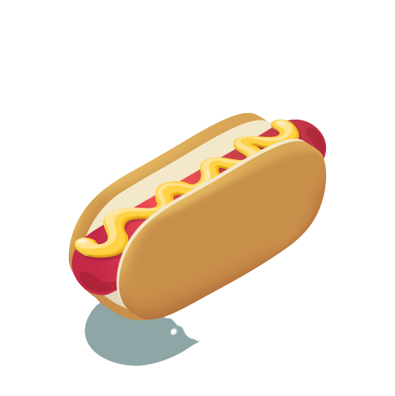

Shop here
DOUBLE BEEF SPECIAL
This KFC zinger burger recipe allows you to create the delicious and tangy zingers at home whenever your want. We also have a recipe for the special KFC zinger sauce which you can find here. Quick and easy! This KFC zinger burger recipe allows you to create the delicious and tangy zingers at home whenever your want. This KFC zinger burger recipe allows you to create the delicious and tangy zingers at home whenever your want. We also have a recipe for the special KFC zinger sauce which you can find here. Quick and easy!
Add To order
Dan Maxwell
"Queburgers make snacks and food feel like heaven. These guys made me go from vegan to omnivores"